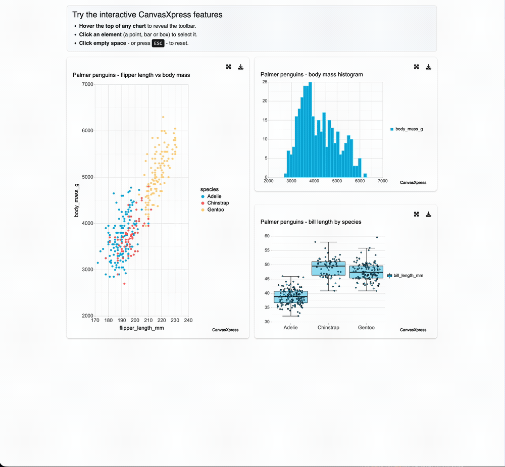

library(shiny)
library(canvasXpress)
library(teal.widgets)
pg <- as.data.frame(na.omit(palmerpenguins::penguins))
ui <- bslib::page_fluid(plot_with_settings_ui("p"))
server <- function(input, output, session) {
plot_with_settings_srv(
"p",
plot_r = reactive(canvasXpress(
data = pg, graphType = "Scatter2D",
xAxis = list("flipper_length_mm"), yAxis = list("body_mass_g"),
colorBy = "species"
))
)
}
shinyApp(ui, server)Interactive, reproducible figures inside teal
R
canvasXpress
shiny
teal
pharmaverse
visualization
A teal.widgets PR adds a render path for interactive htmlwidgets, so plot_with_settings can return a chart you can hover, select on, and download as self-contained HTML — opt-in, and static plots stay exactly as they were.
If you build Shiny apps with teal, you know plot_with_settings — the module that wraps a plot with resize, full-screen, and download controls. Until now it rendered only static R graphics: ggplot, lattice, grob, base. Return anything else from plot_r and it quietly fell through and never drew.
That leaves a gap. The analyst looking at a volcano plot, a Kaplan–Meier curve, or a forest plot often wants to hover a point, select a group, and take the exact figure with them — not screenshot a PNG. In a submission-grade workflow they also want that figure to be reproducible: the chart and the code that made it, together.
A small change with a big surface
A PR on teal.widgets adds a render path for interactive htmlwidgets. If plot_r() returns an htmlwidget — canvasXpress, plotly, anything with a Shiny binding — plot_with_settings renders it through the widget’s own binding, keeping the familiar card chrome. Height, width, and full-screen work as before, and download produces a self-contained HTML file you can email or archive.
It is strictly opt-in. Every existing static-plot caller behaves exactly as it did; the interactive path triggers only when a module author chooses to return a widget.
The chart that lands in the card is a real canvasXpress widget — the same one you can render on its own here. Hover a point, click to select, use the toolbar to export:
library(canvasXpress)
pg <- as.data.frame(na.omit(palmerpenguins::penguins))
canvasXpress(
data = pg,
graphType = "Scatter2D",
xAxis = list("flipper_length_mm"),
yAxis = list("body_mass_g"),
colorBy = "species",
title = "Palmer penguins — flipper length vs body mass"
)Inside plot_with_settings, that interactivity sits in the usual card, with the resize and download controls you already use:

Describe the chart instead of configuring it
Because the render path is generic, you inherit whatever the widget can do. canvasXpress, for instance, can build a chart from a plain-English prompt — no graphType, no axes:
plot_with_settings_srv(
"p",
plot_r = reactive(canvasXpress(
data = pg,
prompt = "Create a scatter plot of bill_depth_mm vs body_mass_g and color by species"
))
)Try it live
There’s a running demo — three canvasXpress plots inside plot_with_settings cards:
canvasxpress.shinyapps.io/teal-canvasxpress-demo
or install the PR build and run it yourself:
pak::pak("pharmaverse/teal.widgets#371")Why it matters
Interactive dashboards usually mean leaving the tools you trust for a BI platform, and losing reproducibility in the trade. This keeps both: the module model and reproducible, code-defined figures of teal, plus the interactivity and portability of an htmlwidget. The figure is still code — it just moves now.
The discussion that started it is teal#1757; the PR is teal.widgets#371. Feedback from teal users is welcome, especially on how you’d want widget support wired into the module API.